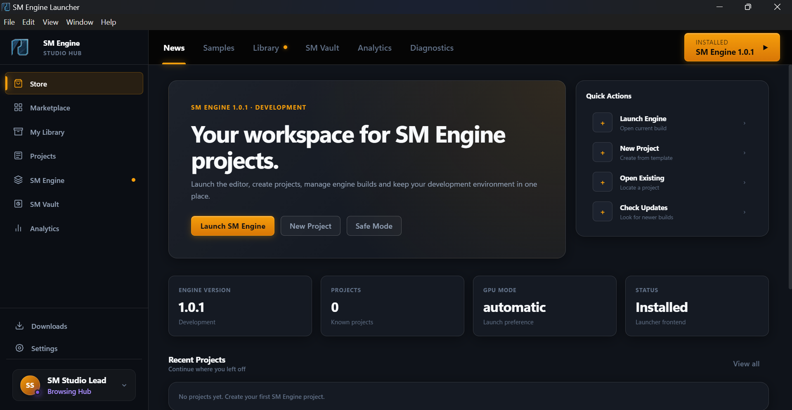

SM Engine Launcher
The official desktop hub for SM Engine — create projects, manage engine builds, browse the BlendSwap marketplace and launch the editor in one place.

Electron-based, local-first
The launcher is a standalone Electron app (
launcher/electron-main.js) that runs entirely on your machine. No cloud project storage — everything stays in your chosen folders.
What it does
Projects
Create from 4 templates (Empty, FPS, Third-Person, Film), add existing folders, launch with GPU mode or safe mode, and track recent projects.
Engine Versions
List installed builds, install new releases from GitHub, set the active version, add a custom engine directory, and uninstall.
Marketplace & Library
Browse BlendSwap directly inside the launcher, download assets, and manage them in your local library.
Diagnostics & Analytics
View system info, copy diagnostics, and review usage analytics and performance events.
Architecture at a glance
The launcher is split into a secure Electron main process and a sandboxed renderer:
| Layer | Key Files | Role |
|---|---|---|
electron-main.js |
Main process | Creates the window, initializes services, and exposes IPC handlers. |
preload.js |
Bridge | Context-isolated API (window.launcherAPI) for the renderer. |
src/LauncherApp.js |
Renderer app | Router, state, and view orchestration. |
src/managers/ & src/services/ |
Services | Projects, engine versions, updates, settings, analytics, and marketplace. |
src/ui/views/ |
Views | Home, Projects, Engine Versions, Marketplace, Library, and more. |
Quick start
- Install the launcher via
SM-Engine-Launcher-Setup-1.0.2-x64.exe(or portable/zip). - Open Engine Versions and ensure at least one build is active.
- Create a project from a template or add an existing folder.
- Launch the engine — optionally with Safe Mode or a specific GPU mode.